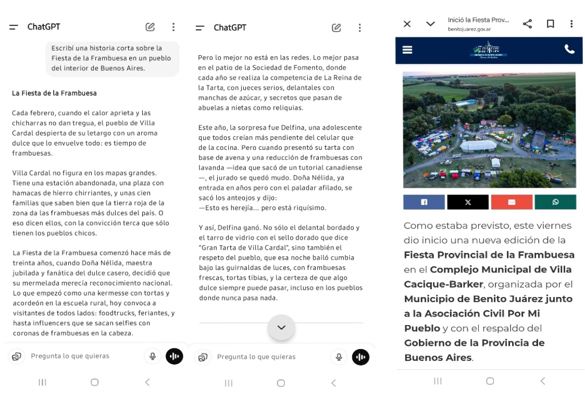

“Escribí una historia corta sobre la Fiesta de la Frambuesa en un
pueblo del interior de Buenos Aires”.

La IA genero una respuesta completamente incorrecta sobre la fiesta regional,
evidenciando una “alucinación”: información inventada por falta de contexto o acceso a datos
actualizados.